浅谈对于电商的业务理解
零、序
本文阐述的是个人关于电商的一个理解。电商是一个非常复杂的生态，由社会中多种角色协力共同完成，很难一篇文章中讲清楚，所以本文更多的去扫盲以及描述其整体流程，而不会过于深入相关细节。
一、电商的本质--零售贸易
「贸易，是买卖或交易行为的总称，通常指以货币为媒介的一切交换活动或行为」其活动范围，不仅包括商业所从事的商品交换活动，还包括商品生产者或他人所组织的商品买卖活动；不仅包括国内贸易，还包括国与国之间的国际贸易。
本质上来讲，贸易就是需求以及供给的撮合过程，贸易的演进过程就是逐步打破交易时空限制的过程。大家当前几乎无法离开的电商体系，其本质上只是贸易在消费品这个零售领域的线上化的表现，最大的功劳是高效的打破了贸易的空间限制，当然论打破空间限制的老前辈的还得是当年的广播/电视购物。
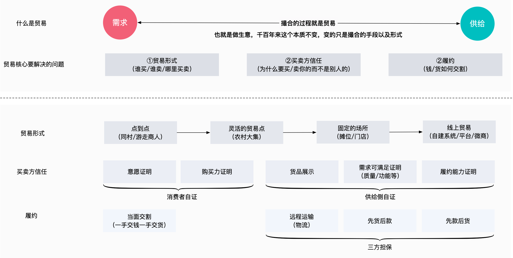
贸易的形式是有多样的，在货币未出现的年代就已经出现了以物易物的贸易形式，但这个效率无疑是低下的且极其受制于空间，出现了专门做低买高卖的中间商（商家），路边的服装店/玩具店/超市/小卖部等等都是所谓的中间商，这个角色的引入极大的提升了贸易的半径，从同村交易到能够横跨祖国南北。
受限于贫瘠的供给以及意识形态，自由贸易这个形式在建国初期并不被政府支持，旺盛的需求实际上一定程度催生了相关的地下交易，因此很多人冒着“投机倒把进小黑屋”的风险偷偷进行。随着改革开放的春风吹变全国，下海成了发财致富的密码，而其中大部分人做的事情无外乎就是恢复已经被压制了几十年的贸易的需求 -- “借助信息差做货物的搬运工”，赚的盆满钵满。
在这一过程中基本形成了工厂 --> 省代 --> 市代 --> 乡镇批发 --> 消费者这一主要贸易形式，这基本是那个年代的基本贸易旋律。在这个时代里需求是旺盛的，但供给依旧不够丰富，因此贸易的话语权大都掌握在卖方，谁要是某个畅销商品的省代/市代，那就是财富的象征。
与此同时互联网开始进入民用阶段，互联网基建的逐步普及催生了电商这一新的贸易形态。98年4月中国电子商务第一单交易产生，当然这笔交易是b2b的，99年出现了b2c（8848）、c2c（ebay），这个阶段的电商还是非常原始的货物展示平台。但03年的非典疫情大大的催化了这一进程，倒逼着淘宝、京东等电商平台去探索新的路径。此后，电商一路高歌猛进，从淘宝、拍拍网、易趣“三分天下”，到淘宝干掉ebay成为国内电商领域王者，再到京东、淘宝分庭抗礼，后到拼多多突出重围，抖音、快手直播电商入局，呈现出“群雄逐鹿”的局面，20多年的发展过程中，有的磐涅重生，有的黯淡离场，电商的竞争激烈且残酷，线上渗透率也从0逐步提升到了25%（数据取自国家统计局24年9月，当年也稳定有些年份了），也就是社会中流通的四分之一的货物由线上交易完成，四分之三由线下交易完成。
我们再回到问题上来，电商在短短20余年成为社会主流的消费方式，到底做对了什么。
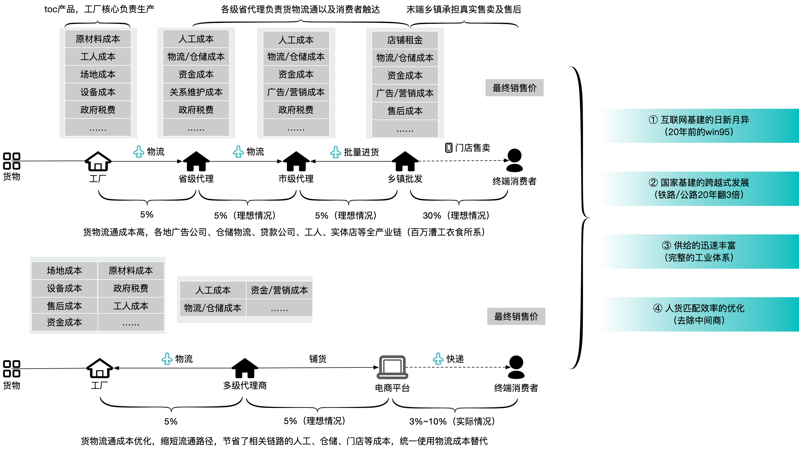
二、电商平台的经营模式 -- 线下模式从模仿到创新
前文说过，电商的本质仍然是贸易，那么既然是贸易就存在的明确的买卖双方，贸易要解决的核心问题是要建立买卖双方的信任，也就是双方都要回答一个问题：“你有什么资格拿走我的东西（钱/货）”。 在这一过程中，双方会产生相关博弈，卖方要证明我的东西值这么多钱，而买方要证明我有钱买这些东西。
这一博弈通常是不对等的，是在动态变化的过程中。在供给匮乏的态势下，卖方更为强势，货物通常会产生高溢价，建国初还催生过“粮票”这一特定时期的产物（当然这个原因很复杂），在这一阶段卖方比较强势，其实也不会有电商什么事，毕竟货物都不够的情况下，那从哪种渠道买就不关键了，换句话说七八十年代即使互联网发达也不一定能催生电商这一交易模式；在供给过剩的年代，买方更为强势，货物基本不会溢价甚至可能赔本也卖，也就是我们当前所处的时代，庞大的工业产能需要着庞大的消费群体，也就需要更多的渠道进行销售。
而这个过程中，为了人货匹配的效率更加高效，会有着各种各样的交易模式来覆盖供需关系，毕竟赚钱不磕碜，赚不到钱才丢脸，至于怎么赚钱就各凭本事。同样电商的经营模式也不是一成不变的，起初的电商平台本质上是在做线下模式的线上化搬运，后来在抄完了之后就开始了各种微创新。
我们先看一下当前线下常见的线下贸易模式与线上模式的一个大体的对比。
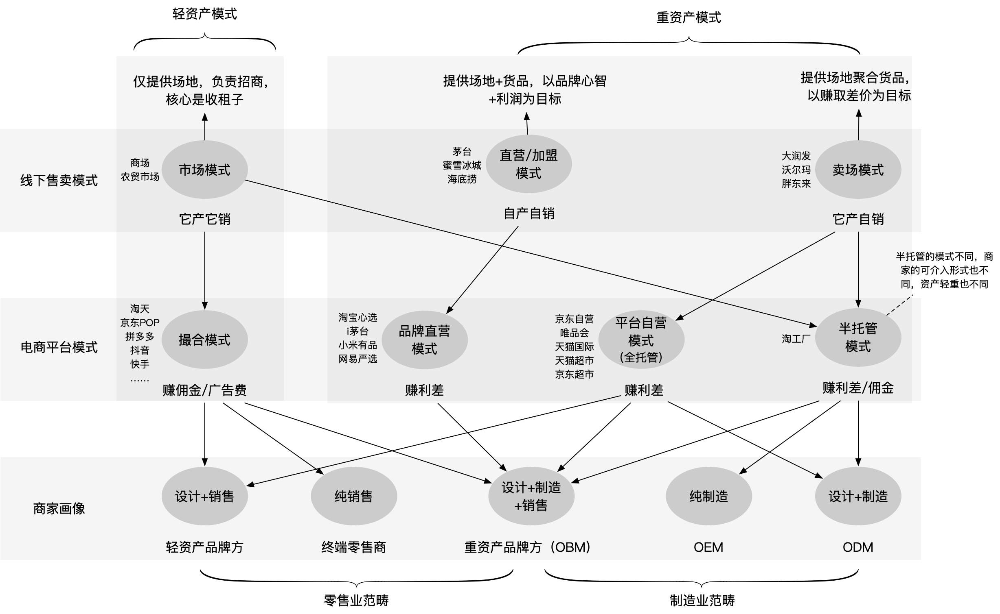
其实可以看到当前电商各大平台承担的角色，其实与农贸市场或者商场的管理部门是类似的，都是在做买卖家撮合，也就是人货场之中的场。那么针对这个场，其实要做的事情就比较多了，要在线上解决线下贸易中实际存在的各类问题，让整个贸易效率更加的高效以及有价值。
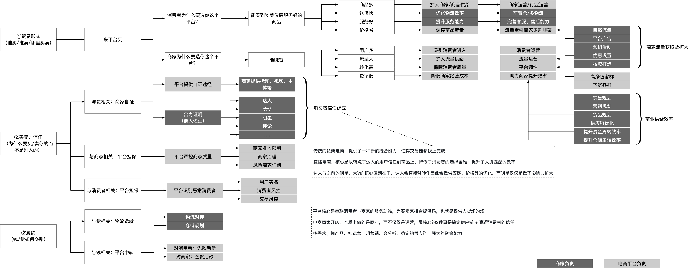
上面从买卖双方角色大体简单阐述了一个撮合场域 + 卖家需要做的事情。电商的经营模式有很多种，但大体是万变不离其中的，比如品牌直营类的，那就是品牌要同时把平台+卖家的部分都做了，如果是平台自营类的那就是平台要把平台+卖家的部分做了，这里不多做赘述。这部分其实本质上都是电商模式对于线下模式的一个模仿。
这里额外要多提一点是关于半托管模式，这个其实是电商对比于线下贸易有比较大差异的点，也是电商基建成熟后做的探索性创新。在正常的贸易形态中，制造厂商一般是不会直接参与贸易环节的，一定是由上方负责承接售卖的直接方与买方接触，而淘工厂、多多等新打通了一条工厂 -> 消费者的路，也就是m2c模式，这个是比较有意思的点，这个后面讲。
现在市场上各种电商平台对自己的pr以及愿景吹嘘的五花八门高深莫测，b2c、c2c、c2m、m2c、c2b2c，现在又有内容电商、兴趣电商、信任电商、全托管、半托管等等等等，其实核心就要看清楚两件事情就可以了，1）它在做的哪一类的供需匹配，2）它为了这类的供需匹配效率提升提出了什么理论/做了什么事。这个往大了看可以适用于公司方向，往小了看可以看产品功能，所有不在提效链路上的创新都是无效创新。
三、商家与厂家的关系 -- 不同领域的协作者
上面我们提到，制造厂商一般是不会直接参与贸易环节的，一定是由上方负责承接售卖的直接方与买方接触，这个似乎与我们的认知有些gap，当前电商各大平台都说自己降低了中间商从而提升了撮合效率，也一直在提要做工厂源头对接消费者，这又是什么呢。
这里我们要提到贸易涉及的三大行业：制造业、批发业、零售业。
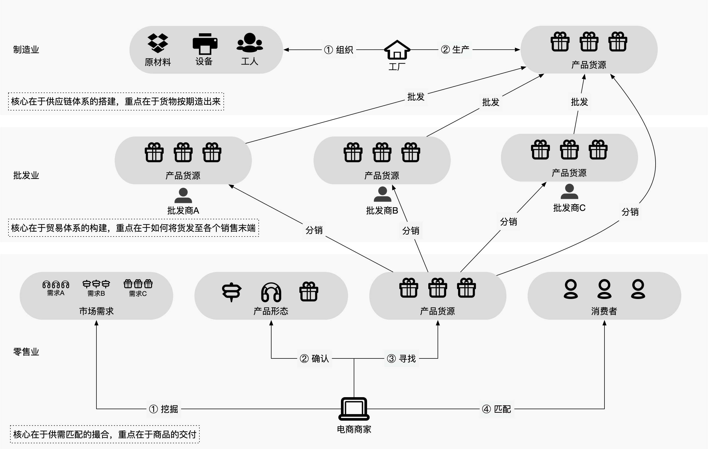
上图其实比较清楚的说明了3者之间的关系，当然由于由于批发以及零售有时候经常是一体的，因此有的也会分为两大类：制造业 + 批发零售业。我们经常看到的一个指标数据叫做“社会品零售销售总额”，这个指的就是零售业的销售总额，制造业以及批发业逻辑上是不包含在内的。里面又有一个叫做“实物商品网上零售额”，这个指的就是通过电商体系产生的零售业售卖额，两者之间的占比我们就称之为线上渗透率，也就是前面提到的25%。
作为一个制造业大国，全国的制造业工厂非常多，按照24年6月份国家给的口径，全国制造业总量超过600w家，其中与电商息息相关的消费品工业制造业整体大概占比4成，也就是大约240w家左右，国家还有一个指标是规上企业数量，其中对应的消费品工业的数量大概是18w家，那也就是说明规下大概有220w家的样子，大概2:8的样子，那看起来这个规上很厉害，但实际的规上指标是年产值2kw的制造业就称为规上企业。同样从人数上来看，全国制造业从业人员大概是1亿多一点（包含潮汐工），分散到240w家企业平均每家企业40人的样子，是不是看起来很多，但这个又陷入了统计口径的问题了，当前全国消费品制造业的从业人员同样也占比4成，也就是4000w的样子，消费品规上企业人口占比为2600w，那剩下的222w企业其实只有1400w，平均6.3个人，这个就比较符合实际情况了，周边有开厂的同学想想他们的厂子规模是不是大概也就是这样。所以绝大多数的厂是只能制造的厂子，也就是OEM，6个人又搞研发又搞制造又搞销售，明显是不现实的。同样利润也是如此，绝大多数的厂其实利润都很薄，从国家数据上看规上工业企业每百元营业收入中的成本为85.38元，营业收入利润率为5.27%，规下企业即使顶格套用利润率也就是不到100w的样子，也就是其实大多数厂长是赚钱但没有我们想的那么赚钱。
从图中以及数据上其实我们也能看到，让工厂直接下场当商家，这并不是所谓的降维打击，就跟程序员做量化一样，这是跨行业的事情，因此一直以来电商都想要所谓的工厂货直达消费者，这个从逻辑上来讲都是很难的，因为它不是一个行业的东西，同时它的规模也很难支撑它这么做，所以在线下零售体系里一定有一个中间商横在中间，具体的体现要么是品牌（盒马/山姆/胖东来的自有品牌部分），要么是买手（沃尔玛），因为必须要存在这么一个角色来建立了货与消费者之间的信任，进行人货撮合以及提供相关零售维度的服务。
但为什么前面又讲到了淘工厂这个是创新呢，其实这两个模式它类似于沃尔玛与山姆之间，它是所谓的m2c模式，它不以传统的赚差价为目标而仍然以平台思路的收取佣金为目标，准入条件必须是源头工厂但又不深度参与定制，同时又通过官方下场搞定消费者的方式解决了制造厂商不善于找消费者的现状----也就是建立货与消费者之间的关联以及信任，制造厂商不需要深度改变自己的经营模式，只要给自己简单贴个牌然后供给给平台即可，让工厂货能够真正直达消费者手中，同时平台不负责履约也全部交由厂商降低平台风险以及成本，同样现在temu、tiktok、速卖通讲的全/半托管，跟这个就很类似，厂商负责造，平台负责卖，履约交给平台那就是全托管，交给商家自己就是半托管（当然半托管有很多模式，履约交给商家只是其中一种）。
当前这一模式目前还有较多的漏洞，比如质量体系不完善、品控不好、丰富度不足，但低价是他们手中攻城拔寨的利器。在网上看到这么一句评淘工厂模式的话深有感触：“供给的那端，每个厂长都有一个品牌梦。消费的这端，每个老百姓都想花小钱，过想过的日子”，性价比是在社会中苦苦挣扎的芸芸众生都在追求的东西。
至少在当前来看，这一模式是尚还不是恶龙，在他们真正长大后会不会成为恶龙，这个就需要时间来证明了。
四、品牌与厂家的关系 -- 伴生共存的伙伴
前面也提到了，常规交易体系下，横在消费者与厂家中间的，基本一定是有一个中间商的，那我们聊一聊品牌。
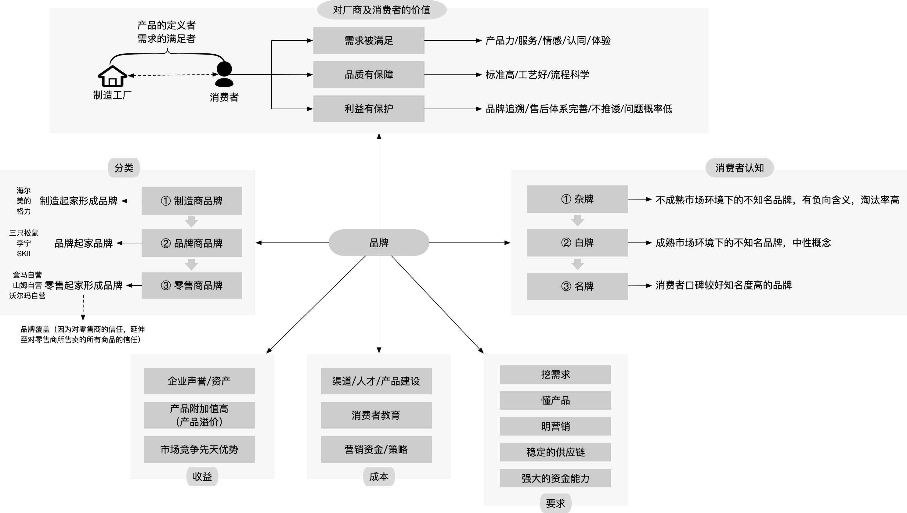
品牌的终极目标就是产生产品溢价，这个溢价分为2个维度的溢价：1）卖的更贵；2）卖的更多。而为了产生这个溢价，品牌方需要做非常多的事情，包括从需求满足、品质把控、渠道搭建、消费者教育等等。这个过程是非常困难的，但一旦建成了品牌方将作为最大的收益放拿走绝大多数的附加值，品牌制造以及售卖链路上的其他角色反而将成为低附加值的存在，因此基本产品做大了都希望做品牌，期望能够吃到更多的利润。
消费者链路是品牌一定要触达的点，施振荣提出了有名的“微笑曲线”理论，虽然很简单却很务实，理论将整个产品周期分成了3个部分：研发、制造、销售。其中研发以及销售占了利润的大头，但在当前国内重销售轻研发的品牌战略体系下，销售是品牌的重中之重，因此品牌无论有没有研发、制造能力，但一定要有成体系的销售团队建设，因此市面上有很多的各种品牌增长的课，大部分主要讲的就是如何对消费者进行有效触达以及转化。那反过来讲研发以及制造就不重要吗，其实都是很重要的，只是在当前的风气下不重要，同时很多的制造厂商它是具备一定的简单设计/抄袭能力的，因此很多的品牌更多的将消费者触达做成了第一要务，这也是国家一直提的我们国内自主品牌多而不精，大而不强的原因，其实核心指的就是研发能力不足，只是一味的靠抄袭设计外加卷到极致的工厂低价生产进行价格战。
我们再聊一下工厂，工厂前面也提到了本身是隶属于制造业。制造业按照其加工属性不同，大体分成3类：OEM/ODM/OBM，它们的核心区分方式主要是以附加值为区分的。研发、制造、销售三者兼备的其实就是前面提到的品牌了，只具备研发+制造的是ODM，只能进行代工制造的就是OEM。我们经常买一些数据线啊充电器啥的经常能看到OEM原厂，其实指的就是某某产品的代工厂出来的不能贴品牌标的品，只要他说的不是假的，那性价比一般都是很高的。
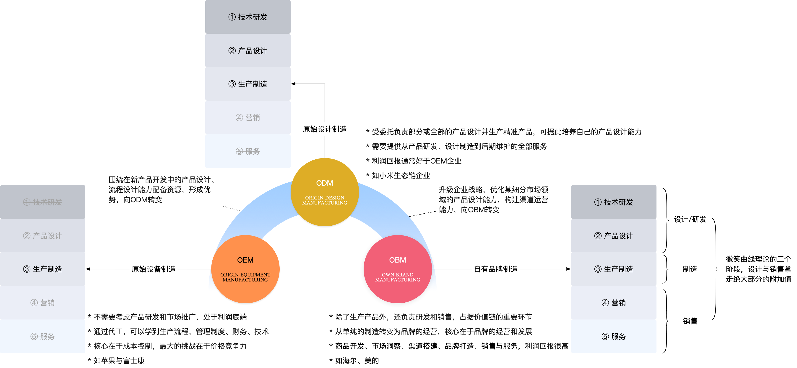
在这三类中，OBM具备最高的利润，因为产品周期中利润最大的两端（研发 + 销售）都被拿走了，这时候的工厂它其实已经不能称之为独立的工厂了，他是品牌集团内部的专有子公司，这类工厂普遍制程、工艺较高，规模也相对大一点。
针对ODM，普遍是从OEM晋升上来的，懂设计 + 制造，但是不愿意做toc的零售，这部分厂商普遍是中小品牌的合作首选，具备一定的产品力能够完整的交付市场。
OEM其实就是代工厂，上游有想法有设计有售卖渠道仅仅缺个工厂一般会找OEM，这类工厂一般也不会是电商平台的合作首选，垂直品牌为了做轻成本一般也会找OEM。
而这里我们其实就能够比较清楚的看到了，OBM一定是品牌，其他类型的品牌会依据其模式的不同选择不同的工厂合作模式，二者是伴生共存的伙伴关系。
下面再简单多啰嗦一句关于我们这些所谓制造业的大体一个分布情况，当然这个更合适的称之为货源地。当前国内的货源地普遍是以地域聚集的，电商行业内称之为产业带，这个产业带可以细化到某一个村子，比如之前有段时间特别火的曹县棺材，其实更具体应该指向曹县的庄寨镇，这个镇子掌控了日本九成的棺材出口，这种生产地点特别聚集，一块区域就只干一件事情，把一件事情做透吃掉全国市场甚至走向全世界。再比如有的女生化妆会用的假睫毛，基本全部来自山东平度，一个县主要产业就是假睫毛，湖州的织里镇供应了全国30%~40%的童装等等。
这些产业带中其实就是我们所谓的厂家，品牌一般而言去贴牌合作基本也都是围绕着产业带进行。产业带一般大都是靠近原材料，这样成本会有着比较大的降低，而且当地政府一般会大开绿灯扶持发展。产业带整体而言更靠近沿海，一个是民营经济活跃度更高，另外一个交通也毕竟发达一些，各项成本更低也更便于贸易的进行，下面大体是一个分布情况，当然很粗而且不全，可以简单参考下
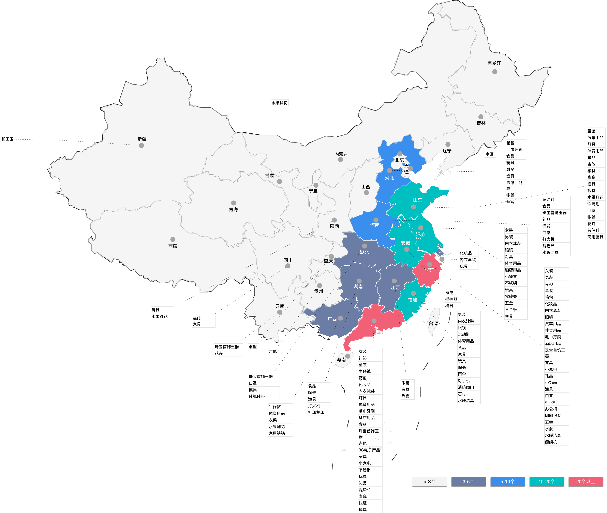
五、电商平台与商家的关系 -- 拉扯不断的合作者
对于电商平台而言，商家就是需求与供给撮合的那个供给端以及提款机，供给端也就是字面意义的半壁江山。如果供给匮乏或者不给力，吸引来的消费者也会迅速流失，也就是我们常说的承接不住。提款机是指平台本质上能够赚的只有商家的钱，这个后面会详细讲。
不同的电商运营模式，所诉求的商家也不同。比如撮合型的电商平台，吸引的是具备销售能力的商家，平台自营模式的，吸引的是具备设计能力的商家，半托管模式的吸引会制造的商家。不同的平台运营模式，也就决定了其适应的商家偏好，同时即使是同属撮合类的平台，其平台偏好以及用户画像也是不同，比如淘天对商家友好利润高更吸引品牌、多多量大更吸引工厂，的所以我们的商家一般都是有主力运营平台，因为他们自己的资源模式基本就注定了很难各平台通吃，如果模式相同（比如抖/快）那么也会资源重点投入某个平台，毕竟资源是有限的。我们再投一下这张图

供给侧逻辑上是零售根基，对于一个流量型平台来讲，前期可以通过引流三方来完成交易，但这个撮合本质上是在为其他平台做撮合，数据、用户画像等都是归属于其他平台。抖音快手前期在没有电商基建的情况下都做过类似的事情，但都很快构建了自己的电商基建，也就是要有自己可控的供给。但这过程中需要做非常复杂的运营，招商、审核、成长、运营、淘汰，也需要提供良好可赚钱的营商环境，同时还要对抗伪装成商家的黑灰产，既怕商家不来又怕商家乱来。
对于商家而言，平台核心帮他解决的问题是消费者哪里来的问题，有了这个场域商家可以把自己的商品展示给潜在消费者，所以平台的流量规模以及调性对于商家而言是非常重要的考量因素，毕竟这个决定了天花板有多高。
虽然要依赖于平台赚钱，但不代表着商家在合作中一定是处于弱势的（当然大部分是这样的），这核心取决于平台与商家本身的规模以及战略上的诉求性。这个其实也比较好理解，就像绝大多数的商场对于山姆都会给予免租金x年的策略，甚至会按照山姆的诉求来进行建筑/消费者动线结构性的改造。记得苹果当年入驻天猫旗舰店那年要求9月发新品时，要求阿里安排技术团队穿西服去苹果现场驻场保障，从来没想到程序员也有穿西服做牛马的一天。
商家在平台侧来看一般会通过行业去进行划分归属以及帮扶，比如男装、女装、快消品、茶酒、文玩、母婴等等，这个在电商的业务组织结构上一般也会有直接体现，大家可以看一下电商的业务组织架构就大概知道了。同时还会对商家进行分层，基本会分为中小、KA、SKA、GSKA这几个类别，不同公司有不同的叫法，但大体都会有类似的体系，毕竟不同规模的商家需要的帮助以及能够给到的扶持也是不一样的，一般来讲中小、KA是属于商家求着平台，而SKA、GSKA基本都是平台跪商家，之前在阿里的时候有段时间有个10来个人的运营团队，团队名字是“大客户服务 - 苹果”。
中小这里要单独拿出来说一下，虽然平台一般都会跪SKA、GSKA，但中小这块其实是每个平台的基本盘。KA、SKA、GSKA一般来讲都是品牌商家，他们会给平台贡献绝大多数的GMV，这个是每个平台都非常看重的点（为什么看重我们后面来讲），但品牌商家因为他们是品牌，品牌的每一个品都是需要投入相关的研发成本去造，同时前面也提过了品牌的最终目标是为了溢价，所以他们会带来2个问题，1）种类很少；2）价格相对较贵；但平台如果供给不足就会带来前面提到的问题，有流量都承接不住（给你机会你也不中用），毕竟不是所有人都有钱买品牌以及希望被溢价的。这就是广大中小的存在价值：为平台提供更丰富多样化或极具性价比的商品。
每个平台的中小都是让平台很纠结的存在，他们规模又很小贡献的gmv又不足也服务不过来，同时还有广大黑灰产伪装成中小来套利搞事情，但平台是真的离不开他们，同时谁又知道哪个有潜力的中小会变成下一个三只松鼠，所以新商引入一直是每个电商平台绕不过去的坎。
商家与平台本质上还是企业与企业之间的合作，二者之间更多的是一个合作共赢的关系，当然中间会有着非常多的拉扯，商家要想办法低成本获取平台消费者，平台想要高价卖平台消费者，如果不赚钱商家就会跑，如果个别商家过于赚钱平台自然想抑制让整体生态更健康繁荣，但整体而言双方仍然是合作共赢的关系。
六、电商商家要干点啥 -- 做个赚钱的零售商真的很难
前面做了一大堆铺垫，到了现在，我们来真正谈一谈平台的大韭菜 -- 电商商家。每个商家都是满怀希望来到平台，想要借助平台的力量赚遍五湖四海的钱走上人生巅峰。但实际上绝大多数人铩羽而归或勉强度日，这是为什么呢。
其实前面的部分已经讲了电商的本质是零售贸易，而店主就是零售贸易中的供给端，我们且不说电商店主好不好赚钱，观察下小区门口的那些底商，能活过3年的零售品店有几家。这个不好赚钱，不仅仅是电商不好赚钱，而是整个零售贸易都很难赚钱，前面我们的数据也提到了电商的增速多少还是高于社零的。
零售贸易是一个竞争季度激烈的市场，其准入门槛低、上手难度小，带来的自然是充分竞争，在这种竞争态势下，同质化的打法很难在其中立足，电商尤甚。为什么讲电商其实更难赚钱呢，主要原因在于电商平台买卖的绝大多数是工业消费品，工业品本身不具备稀缺性，平台上能够有来自五湖四海的买家，自然也会有来自五湖四海想要赚钱的商家。
难归难，再难的事情也有人做，更何况跟全社会比，电商毕竟还是可能有的赚的行业。但本质在那放着，不理解这个生意的本源，意图想小白进入轻轻松松赚大钱的商家，必然是输的一光二净。
首先我们看看作为商家需要做哪些事情：
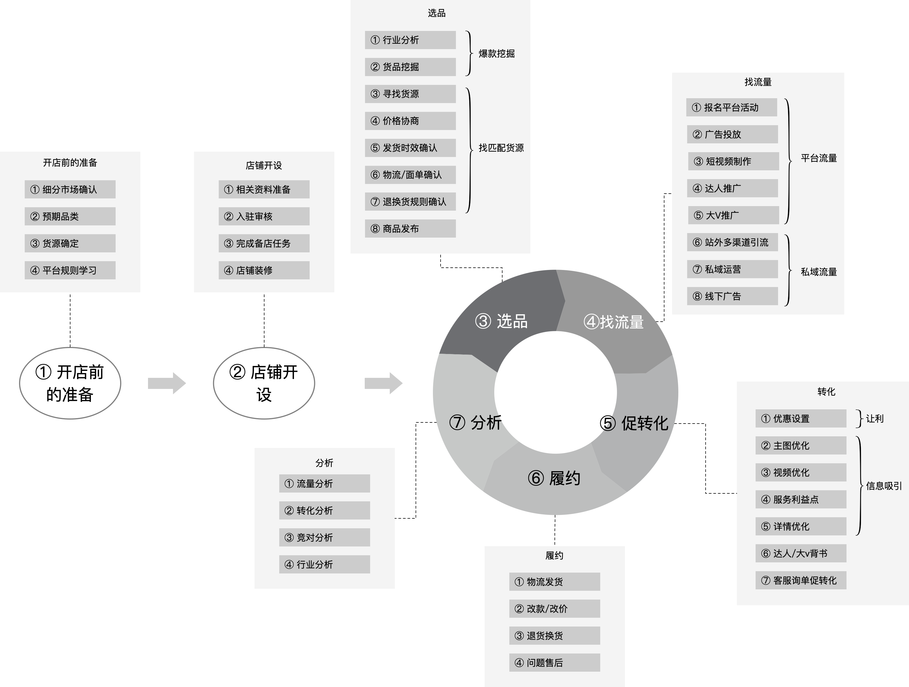
其实从图中我们可以看到，商家需要掌握的技能很多，并不是说今天你有个二三十万当个甩手掌柜就能来电商上面轻轻松松赚钱，运营是其中的重中之重。运营中有比较重要的一点是选品，在电商经营的圈子里有这么一句话，“选品选好了就成功了70%”，说明了的选品的重要性。这一点是有些反认知的，在常规的理解中，来开店的商家一定是有了相关的货来平台卖，那为何选品会成为商家的一个绊脚石？
对于品牌商家来讲确实如此，他们是先有品然后再看怎么卖。但是对于平台上的广大中小商家尤其是新商小商，他们不是先有货源再来卖，而是仅做一件事情：找到合适的产品然后把他卖掉，也就是赚差价的中间商。
这个过程是非常痛苦以及艰难的，我们经常听到的一件代发，其实就是类似的模式，我们的商家从各个地方自己找到有爆款潜力的产品，然后找地方去找对应的货，然后铺在平台上卖然后赚这个差价。在这个过程中，商家核心要做2件事情：
挑选潜力商品，可能是图片可能是实物，在这个过程中，商家要通过各种经验、常识、趋势、数据分析去找出有潜力的品。
找到能够提供这批商品的供货商，在这个阶段，商家需要去各种网站上找货源，与供货商确认相关服务信息。
这一点非常的考验商家，第一个点决定了对于市场走势的判断，这个需要有大量的数据支撑或者敏感的市场捕捉能力，判断什么能够卖的好，这点与线下衣服店是不是很类似，定期去批发市场选出来那批可能好卖的衣服。第二点需要有稳定可靠且低价的供应链，试想你今天在抖/快发了个品，结果它突然爆了，平台又要求48小时内必须发货，那你从哪儿去搞这批货呢。
同样卖家还要有匹配的的资金能力，这点不多说，供应链就要求资金的占用，要是一件代发就能发财，那平台上全是一件代发了，更何况即使是一件代发，你也要先有钱给下家，然后才能说中转的事情，怎么都得个万把块钱打个底儿，当然这个在你是小商家的时候问题不太大，毕竟也占不了多少，但当你规模大的时候，这个资金占用就会非常恐怖了。
好，假设我们作为商家选好了品，那下一步紧接着就该干什么了，也就是要上架商品了。上架商品也不是说上了就行，你得持续的优化，首先是测品，也就是测一下这个品的潜力，如果说投了几百块钱做广告结果roi都不正，那就说明前一步的选品就有问题，得回去继续选。如果roi做正，那就尝试给大点量，再优化下相关的竞争力，争取卖的更多。这两步考察的就是转化，转化率越高，自然成单就越高，也就赚钱。
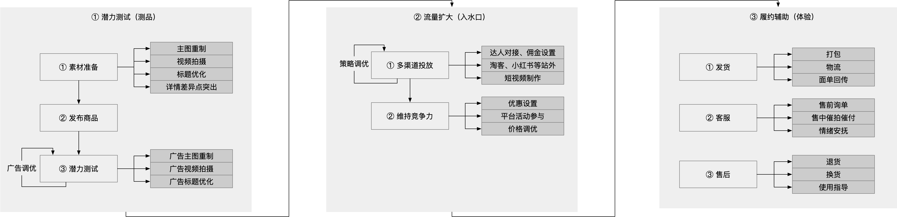
然后就是履约相关，这就是前面提到的供应链的重要性，你供应链不稳当，下游干着干着下游撤链接了，干着干着下游没货了，迎接你的只会是平台的暴击，咵咵咵的罚单下发到你头上。
另外商家还深受平台的各类考核，发货时效、面单管控、客服及时回复率、开播率等等，需要关注的事情非常的多。
这里多提一点一件代发这个模式，这个模式其实是最轻资产的，也是网上搜大把教程或者卖课的重点，大家都是通过教你一件代发来赚钱，在他们的视频里，似乎轻轻松松就能赚钱。这个其实就像是我们在作出新产品的之前的那个demo，没有精美的ppt或者动态演示稿，是吸引不了别人buy in的，弄的太复杂直接给韭菜劝退了怎么办。前面我们其实也提到过了，制造货物的工厂，他其实并不擅长零售，他只擅长货物的生产制造，零售业的履约售后都不是它擅长的，因此一件代发所谓的货源大概率是中间层的贸易商，即使我们广大认知里的1688，其真正的源头工厂也就不到一半，大部分都是中间层的代理商，你的一件代发的货是他们提供的，你觉得你的货在市场上的竞争力会是如何呢，他们能够提供给你们就不能够提供给别人吗。
那一件代发这个模式到底可行不可行呢，其实倒也不是说完全不可行，而是对从业人员有着比较强的要求，要么能够容忍足够低的利润率，要么有优秀的市场洞察能力去发掘细分市场的需求，第二点是非常难的，而且你有了这个能力搞好供应链只会赚更多的钱，毕竟中间没有人在吞噬你的利润。针对大部分人而言，一件代发说到底赚的是运气的钱，足够的广告打出去后总有人会转化，这种模式用于入门摸清电商行业的门路是可以的，但注定无法做大，想要做大还是要踏踏实实的遵从零售贸易的本质，需求挖掘以及供给端匹配的能力都要建设。
做电商说到底拼的三个点：1）市场先机捕捉能力；2）供应链能力；3）匹配的资金能力。这3点跟线下开店没有任何区别，所以要冷静清晰的看待电商，它就是零售贸易，零售需要的能力这里一点都不能少，别总想着干不了了我就干个电商店，小卖部你都开不好别总想着来电商能赚钱。
但这不意味着电商就不能干，自然是能干的，电商虽然是个红海，带充分的流动性就让它带来了极大的机会。电商大家可以看到电商商家流动性非常大，今年销售过亿的商家再过几年可能就没消息了，其本质还是需求满足做的好不好，社会在发展，需求也在变，持之以恒的挖掘以及满足需求才是长青的王道。就像现在垂直赛道的切分，国内这么大的消费市场，随便切一个细分赛道都会有足够量的用户等着你去满足，所以从这两年也能看到，专攻某个垂直赛道的商家越来越多，产生的小而美的品牌也越来越多。流动就意味着机会，意味着阶层没有固化，意味着社会上的需求没有被完全满足，就像在一家企业打工一样，如果企业几十来年领导层一直是一拨人，那下面的员工会感受到深深的绝望。
挖需求、懂产品、知运营、明营销、会分析、稳定的供应链、强大的资金能力，这些都会是对于商家的要求。所以做电商不难，做个赚钱的电商商家真的很难。
七、商品的销售价格 -- 我们都是千亿市值公司的基石
下面大体体现了一个商品价格的构成，是有多类成本组成的
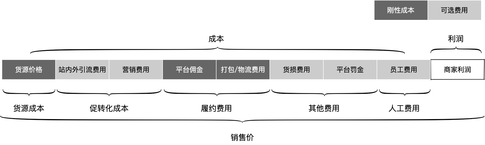
这里提一点我们作为消费者买到的货的的价格组成，商家的价格一般由上面这类方式组成。不同的行业其比例不同，但大体的费用是这样的。这其中的刚性成本基本是不可规避的成本，这其中货源价格以及打包/物流费用基本是不可省的，当然做虚拟类目的可能没有物流费用，但不代表它的运营成本低，这种类目的品普遍佣金率高于实物类目，毕竟你本质上卖的是服务。
当前电商各平台前段时间如火如荼的价格战，核心打的是什么，其实就是拼谁的成本控制能力强，其中平台佣金比例是不可能减少的，因此商家就需要在其他方向去压缩，站内外引流费用、营销费用这两个大概率不能省，省了就没流量了。货损费用、平台罚金、员工费用这几块可下降空间不大。唯二可以压缩的，1）货源价格；2）商家利润。
所以在价格战初期，商家主动选择的是让利，当利润已经薄到一定阶段之后，能下降的就是货源价格了。这个时候拼的就是供应链，这其实也说明了供应链的重要性，越源头货源价格越低，一件代发这一类商家其实是会非常吃亏的。
我们做如下举例，可以看到当我们货源价格低时带来的优势是全方位的，与商家利润不是线性增长的，它不仅仅带来了更大的流量，也会带来更高的转化以及资金利用率。
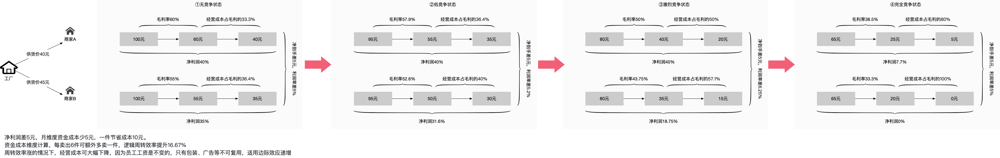
所以对于任何电商商家而言，货源价格都是重点攻关方向。但这个就要看各自商家的本领了，一般来讲越靠近工厂价格越低，但越靠近工厂，一件代发的可能性就越低。
我们可以看到，淘宝售价4元不到的宝贝，商家小批量进货价在1.6元左右（气球售价1.3元，5号电池价格约0.2~0.3元），然后还需要进行物流包邮以及为自己留一定的利润，那么这种场景下，物流等刚性支出是不可少的，想要在价格上赢得竞争力，货品价格就变得至关重要，如何找到质优价廉的源头货是一件非常有挑战的事情。就如上图中看到的，1.18元进货，与1.5元进货，与2.23元进货，他们在经营上后续的难度也完全不一样的，这个也是比较好理解的。
| 淘宝售价 | 拼多多售价 | 快手售价 | ||
|---|---|---|---|---|
| 1688价格 | 1688上价格相对较低的商家 | 销量：100 最高销量5000+ | 销量：9300 最高销量：1.7w | 这个是10件的价格，销量超过平台90%的品 |
| 义乌购价格 | 义乌购上价格相对较低的商家 | 销量：100 最高销量5000+ | 销量：9300 最高销量：1.7w | 这个是10件的价格，销量超过平台90%的品 |
但在这个页面我们也能看到，淘宝的售价3.91，去掉成本还有2块多，这2块多还要包邮以及送电池，以及给自己留利润，那么他们的进货价肯定不会是1块1，甚至可能就是几毛钱，那这个供应链能力就是这个商家可以制胜的法宝。我们再看看多多，基本就是成本价出还得包邮送打气筒，电商上工业消费品的卷在这里也有着淋漓尽致的体现，因此货源价格对于商家而言是至关重要的，除非是你挖掘到一个没人的赛道，不然价格战是逃不过去的事情，前面也讲了，其实能够带来最大优势的就是价格，因此这也倒逼商家去尽可能的找源头货，而不是中间被加过好几次手的货。
下面是各平台同类商品的价格对比截图（1688源头、淘宝C店、品牌官方店）：
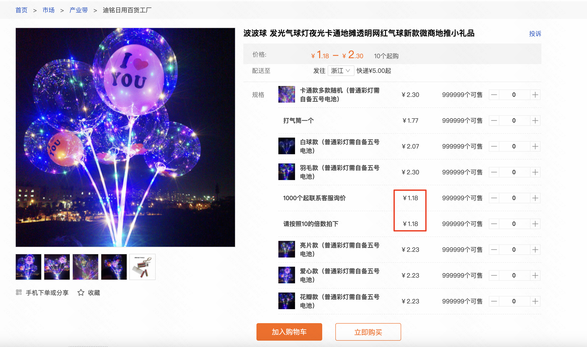
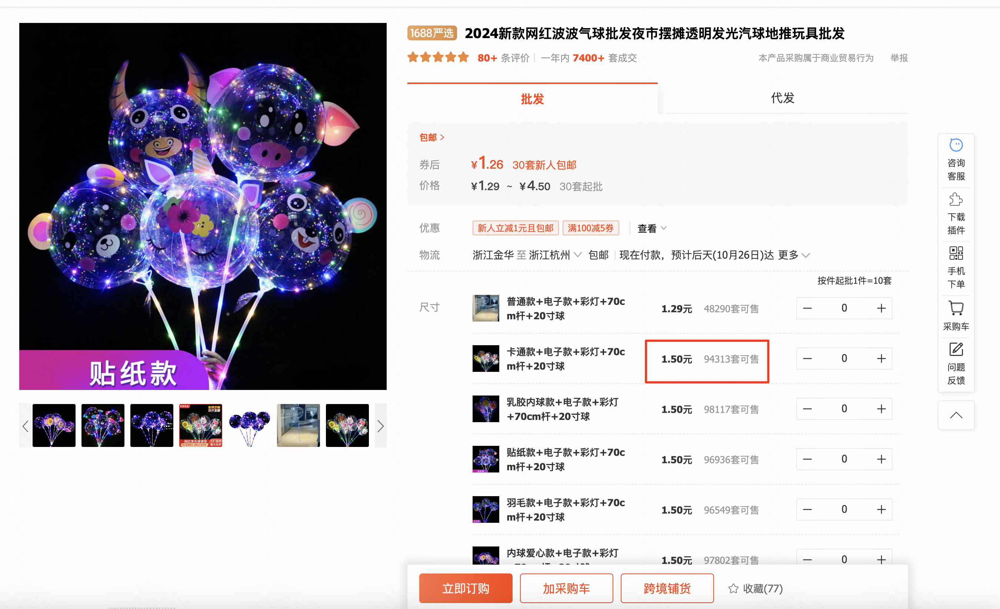
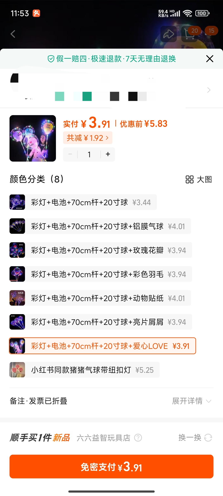
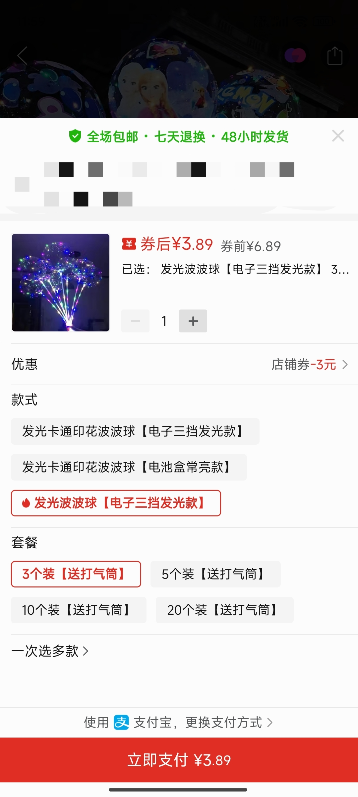
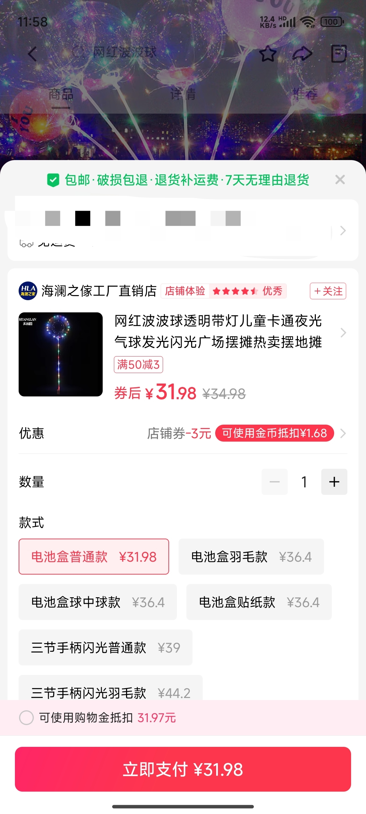
但不管怎么样，最终都是由消费者买单，而我们从价格构成也能看到，各大电商平台财报上亮眼的营收中都是我们的钱，我们每个人都是千亿公司的基石。
八、电商平台是如何赚钱的 -- 每个toc公司都有一个电商梦
在线下体系，做撮合的比如商场、菜场或者农村大集，平台方其实本质上是收场地出租的租子，也就是包租婆，那么他们的营收逻辑其实就相对比较简单了，尽可能的提升每平米的租金就可以了，毕竟资源就这么点，价高者得，但在过程中需要优化店铺结构保障商场的整体形象，不然一个好好的商城全变成卖菜卖水果的，那就转型成菜场了，所以在这个过程中会0租金甚至返利性的引入一些大牌，比如周x福、优衣库、山姆等等，后来随着体系的演进，也开始与对商家抽佣金，做到收入的细水长流。
在线上贸易体系下，最开始其实是类似的，电商的场所其实是虚拟无限的，可出租的位置以及时间也是无限的，在最早期ebay其实也是学的线下模式，你入驻得掏钱，也就是所谓的坑位费了，但淘宝就靠免费入驻这一招降低入驻难度打的ebay措手不及，所以入驻收钱这个事情目前已经基本没有了，韭菜得养肥了再割。
那入驻不收摊位费平台总的赚钱，因为我研发网站也有成本，你每交易一笔都得耗费研发以及系统资源，所以就取名技术服务费/交易服务费，其实本质上就是抽佣，这个是电商最开始的赚钱模式。不管名字起的再花也改变不了税的本质，一般是0.6% ~ 5%之间，不同平台佣金比例不同，同一平台不同类目佣金比例也不同。同时成交收，不成交不收，退款也得收，当然现在部分平台开始做退货退佣金的策略。
但后来就不一样了，随着平台商家的膨胀，商家越来越多，竞争越来越激烈，大家都想卖的好，但货架电商流量就这么点，那怎么办呢，好，那平台把原本免费的流量圈那么一点出来，比如在搜索结果页插那么几个位置，或者在网站首页咔咔搞几个banner牛皮癣，这几个位置收费，但这个收费就得价高者得了，这个其实就是广告，这个是最大的杀猪盘，无数商家辛辛苦苦干一年就是为了给平台赚广告费，这本质就是存量内卷，平台自然是期望商家越卷越好。
当然平台还会有一些其他的收入，比如报名某些营销活动要收费（聚划算坑位费等），还有天猫年费、京东年费、天猫积分、付费营销工具、付费数据（生意参谋）等等，但这些整体占比并不高，整体也不是平台的营收重心。
正常来讲到这里也就差不多了，但多多新发明了一个收割商家利器：罚款，罚款这个其实各个平台都有，目的是为了让商家不要作恶，在多多壮大之前并不是平台的营收主力，只是多多商家生态的问题，硬是把它做成了一门生意。
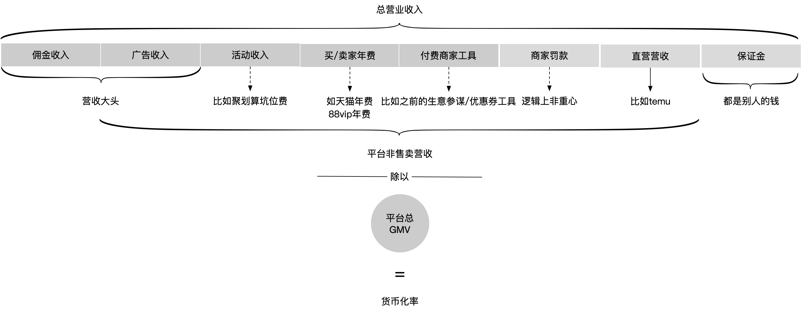
以上是撮合类电商平台常见的营收，但当前的电商平台基本上都是混杂型的，像淘天主力是撮合但也有国际、猫超等直营业务，京东直营为主但也有pop，拼多多国内撮合但国外是全/半托管，因此从财报上来讲，营收那一块就可能包含直营收入+佣金 + 罚款。从这个角度来讲，我们其实很难从营收角度看从商家身上赚了多少钱的，因此有了一个货币化率的概念，也叫take rate。
这个货币化率（take rate，tr）= 平台收入/GMV，货币化率是金融学的一个概念，原指国民生产总值中货币交易总值所占的比例。当前各大平台普遍的take rate是3% ~ 10%不等，同时进一步拆细经营主体各自计算，比如淘天拆分为天猫、淘宝。这样更好理解：平均每产生100块钱GMV，平台可以在你这100块钱里赚多少钱（包括广告、佣金等），体现的是变现效率。
淘天大致3.5%（天猫大概是6.5%，淘宝是1.1%的样子），多多大致是4.4%，（以上取自2023年国信证券进行的测算），快手应该是在7%的样子（取自24Q2财报估算），抖音电商最夸张接近10%。这里面99%的钱都是由商家出的，这也一定程度能说明商家在平台的费力度。
比如抖音，商家每产生100元的gmv，其中就有10块钱是给商家上需要交给平台的，注意这个是营业额的10%，而不是净利润的10%，这个其实是一个非常夸张的比例。我们对比国家对企业进行征税，核心2大税项：增值税以及企业所得税。1）增值税是毛利的占比来收，小规模纳税人季度销售额不超过30w是免征的，一般纳税人是毛利的13%；2）企业所得税逻辑比较复杂，但征收大体上是与净利润匹配的。所以整体可以看到国家征税大体上是与利润挂钩的，你不盈利是不太需要纳税的，就比如各大电商平台当年不盈利的时候，虽然有过亿的用户，但本质上是不需要向国家缴税的。
这其中的大头是佣金+广告，佣金前面讲了，0.6%~ 5%之间，只有极少的类目是超过5%的，像天猫平均2%，多多平均0.4%，而且时不时来个免佣，那我们前面提到了天猫tr是6.5%，多多的tr是4.4%，剩下的那4%~4.5%会是什么呢，这就是广告了，这也是一直以来说电商平台都是广告公司的由来（是不是比2%、0.4%高多了），至于为什么广告这么重要，那自然是商家需求庞大，后面的营销部分也会详细提，简单来讲，这是让商家能够触达到当前本不该触达到消费者的有效方式。
电商的这个货币化率与营收匹配，商家赚不赚钱我平台是要有研发以及服务成本的，用爱发电是发不出来的，似乎理也说得通。但换个角度讲，当电商平台营收平衡后，买个小米手机跟买张小米手机膜，技术/运营的服务成本会有千倍的差距吗，“赚超额利润是每个企业都想要做的事情”。
所以从数据来看，直播电商的商家其实经营成本是非常高的，市占率一直下滑的淘天反而经营成本是低的，尤其是淘宝的tr只有1.1%，真就技术服务费了，这也是阿里财报上一直提到的要提升货币化率的主要原因，因为相较于直播电商而言，他的提升空间太大了。这里我们还需要深思一个问题，就直播电商当前的货币化率，以及广受诟病的退货率，再叠加不稳定的流量机制，商家经营的热情该如何挽留。

我们再回到这张图上来，传统线下贸易有多级代理去吞噬了巨量利润，导致终端消费者售卖价格过高，电商通过线上化的方式更高效的进行了人货撮合，打低了终端价格。那其中的利润都让利给消费者了吗，其实显而易见的，让利确实也是让了，但平台从中截流了很多，gmv越高营收越高，再加上优秀的轻资产模式，这哪个老板能顶得住。
所以再想想，为什么每家toc的互联网公司做着做着就要一定要切电商赛道呢。
那我们都说了平台这么敲骨吸髓的，商家为什么还要舔着脸在这卑微的被收割呢（后面也会提到，想赚商家钱的不只是平台）。无他，原因只有一个 -- 赚钱不磕碜，跪着挣也是挣。电商行业所在的零售行业确实是卷成红海，但从数据统计上，电商仍然是持续增长且相对速度较快的行业，同时入行门槛极低。今天假设各位是即将进入零售行业的商家，看看下面这个数据，大家是选择做实体零售呢，还是做零售电商呢。
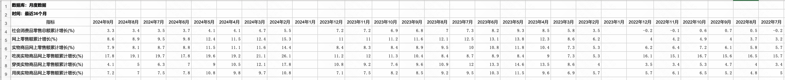
所以其实但凡有的选，电商行业也不至于卷成这样。假设哪一天电商的增速低于社零了，那也是线下实体店再次活过来的时候。
九、电商平台与品牌的关系 --- 企业间的商务合作
其实每个大型电商平台在最开始的时候，都是以性价比著称的，比如淘宝当年做c2c的时候，主打的就是所谓c2c的便宜，京东刚开始主要做3c直接通过低价革了中关村百脑汇的命，多多更是走了极致低价+病毒式裂变营销硬生生从市场中撕开了一道口子，到了今天的直播电商，各大主播哪个都宣称自己是最低价。其实这个并不难理解，性价比是消费者的最大公约数，不论是高质中价，中质低价，低质地板价，主要要有一个错位感，让消费者感觉自己占到便宜才是最符合人性的，在当前供给过剩的年代，需求在哪里供给就在哪里。
一旦平台打出声浪了，那自然就是想要赚钱的，前面也讲了赚超额利润是每个企业都想要做的事情，同时也讲了电商平台2大主要收入：佣金+广告，这两个就注定了规模是重要的，因为他们的基数基本都是与营收挂钩的，9块9包邮才能赚几个钱，因此都会不约而同的想要去做大规模，这个时候该怎么办呢。这时品牌就该在其中起作用了，纵观这几大电商平台发展史大家可以看到，平台在最开始初期的时候去啃硬骨头的一定不是品牌本身，最多是各种中小商家 + 各种品牌小经销商之类的来试水，一旦平台成了，那品牌自然就会蜂拥而来了，这是正常的企业经营行为，毕竟品牌企业里大部分也都是普通打工人，何必冒着丢工作的风险为公司赚高额收益呢。
品牌普遍有2个特点，规模大 + 有钱，我们前面其实分析过了，品牌拿到了产品周期首尾两个阶段，吃掉了产品周期中最丰厚的利润，因此规模自然会是品牌追求的东西，毕竟他们也赚的是与之伴随的超额利润。与发展到一定阶段的平台可谓是干柴碰上烈火，哐的一下就爆炸。品牌帮平台做大规模提升营收，平台为品牌提供新的销售渠道。所以在这个阶段，电商平台的gmv增速会非常夸张，可以看到电商平台财报上营收七八十八九十甚至翻倍的增长。
但品牌的深度深入对于平台而言有利自然也有弊，利自然是规模能做大，弊端就在于当你想掉头时，当初赚钱有多爽现在转型就有多难。这次轰轰烈烈的价格战，淘天其实并不是意识不到价格优势的重要性，一开始的淘特到后来的淘宝价格力亲自下场。但淘天作为品牌gmv占比70%的平台，淘天想做价格力那些品牌是否愿意陪平台一起，淘天想让品牌少收割一点品牌是否愿意，品牌也是企业，追求的也是超额利润，也有一大家子要养活，也有自己的考量。SKA、GSKA等大商家能够给平台带来足够规模的同时也换来了极大的议价权，前面也提到了平台在与SKA以及GSKA的对话中是不平等的，所以我们能够感觉得到淘天做低价这件事情一直摇摆不定扭扭捏捏，甚至为了客户是谁（买家/卖家）这个问题争论了2年之久，通过各种所谓L1-L5人群进行用户分层，不同层级采用不同手段跟随多多的低价策略但总是不见效。“能够让品牌降价的只会是消费者手中的票，平台的死活品牌是不care的，死了这一个自然会有下一个”。
同样的是，多多、抖音其实目前都是在品牌加持的gmv高速增长末期，一旦这个阶段过了，在不出现新的打法以及思路的情况下，平台增速也必然会逐步衰减到淘天以及京东的那个位置上，这个是逃不过的。
那后面该怎么做，对于平台而言其实只有一条路，继续扩大规模。当然你说我自残一臂就用现有模式赚钱如何，其实是不行的，电商本质在做的是撮合生意，处于激烈的零售业赛道，这个赛道是个你死我活的生意，不是说你今天像三体里一样发个安全声明别人就不抢你的市场份额。这个功能他有你没有，消费者慢慢就会流失，市场份额就会慢慢萎缩，最后成为别人口中的所谓小而美的电商企业。
在当前的电商市场，依然是大家都在摸着淘天过河，毕竟它体量最大，看起来很老态龙钟，但你经历过的他基本都经历过，宝贵的经验能够让新兴平台少走很多弯路。大家仔细看一下，其实会发现基本别人走的路都是类似的，大体呈现 平台营销造声量 -> 品牌做大虹吸 -> 供应链优化三阶段增长的链路，从行为上将，都是中小起家，品牌做大，直营让你虚胖。直营这里不展开讲了，简单而言直营会让数据做的很好看（营收很大），但利润率比较薄，也很重资产，所以当前淘天也在收缩国际、心选、猫超这类让财务指标很好看但实际贡献率一般的直营业务。
我们再回到品牌上来，品牌对于平台而言有利有弊，需要看平台如何去平衡与它之间的关系。
十、电商营销 -- 产品优缺点的放大镜
这里之所以要单开一节说营销，而不说其他的，其实对于电商甚至于贸易而言，营销是与之并存的共生体，市场营销部基本是每个零售贸易型公司必备的职能部门，做电商必讲营销，没有营销电商也基本做不太下去，说个最简单的，电商商品发布的时候都有两个价格要你填，原价与折扣价，这个折扣价其实就已经涉及到营销的范畴了。
反过来说到营销，这个就有点老本行的感觉，入行8年，在营销干了6年，商家营销、平台营销、招选搭投都搞过一些，也是个人技术成长最大的6年，按理来讲对于营销应该是会有比较深的理解，但很惭愧，光进步技术去了，对于业务其实理解的并没有很透彻，下面大体讲一下自己的理解。
以前有句话叫做，酒香不怕巷子深。但这个其实是指在产品力爆棚的情况下，客户需求只有你能满足，市场独你一份，那你自然是不害怕的，所有的消费者都是你品牌的传播者。就像以前的苹果，用户体验吊打天下，每年的新品发售都得加价买。但在电商行业，大多数的商品都不是这样的商品，那在这样的情况下，想要卖掉，自然就得吆喝。这个吆喝，其实就是营销。
当然上面只是营销的一个具象的体现，营销是一个很泛的概念，大家会发现各个团队都有所谓的营销，比如电商有平台营销、商家营销其实比较好理解，但商业化广告团队也称自己为营销。其实就是涉及到营销的本质，凡是为了放大影响力的都可以称之为营销。比如我们个人角度，有的人喜欢写文章，咵咵咵一天写几十篇让别人看，那这本质上也是一个营销，打造所谓个人名片。所以营销是一个很泛的概念，并不是说只有买一赠一这种才能算是营销。
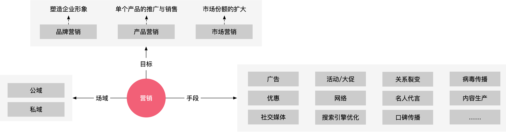
做电商逃脱不了的就是营销，就算你发个品什么都不干就是折扣价设置的比原价便宜点，这其实就已经算是营销了。就是因为营销与做生意息息相关，所以在电商搞营销属实是累的要死，市场要满足的需求太多了，加班加到吐，毕业在营销团队呆的6年，让我一度以为整个电商都这么忙， 直到去做了搜索才发现原来忙的主要是营销。
先说一说营销的分类，依据最终受益目标，大体上是有产品、品牌、市场营销这三种。产品营销是最有体感的，也叫效果营销，也是商家直接对消费者做功的营销，核心目的就是为了卖货。品牌这种比如你发现有的广告就像病毒一样，也不知道卖啥的就哐哐给你一个劲的喊某个品牌的名字，这种就是为了提升自己品牌的影响力。市场营销其实跟品牌有点像，但是它不太一样的是就是通过各种手段去扩大对应主体的市场份额，它是一系列的营销策略的组合拳。
在电商做营销一般是指产品营销，也就是针对某个品做手段，让它触达到它当时可能不该触达的消费者。为什么这么说，因为电商虽然是五湖四海的买家都能来，但想赚钱的供给更多，就导致比如货架场的搜索或者内容场的推荐它可能没办法给你曝光。下图是一个标准搜索工程的实现链路，对于商家来讲自然是想自己的商品尽量被别人看到，但平台的流量是有限的，商家想要争抢自然流量的透出，则首先第一关就是商品要进入图中excellent中，也就是常叫的商品精品池，这个精品池是由算法通过一系列的打分来给商品赋的，如果商品进不了这个excellent，那基本就不要想透出的事情了，除非你标题全匹配走文本召回的那一路，不然大概率是无法透出的，淘天全网大几十亿商品，excellent中也只有小几千万的商品，你又凭啥透出。如果你抬杠说我就标题起的好，走文本召回，但你觉得好的标题别人也会觉得好，所以商家基本是放弃好好起标题的，大家看商品也能有体感，标题都是稀奇古怪不可读的，就是因为标题全匹配这个基本带不来什么流量，纯粹是做搜索分词优化想要占据一些有潜力的词。
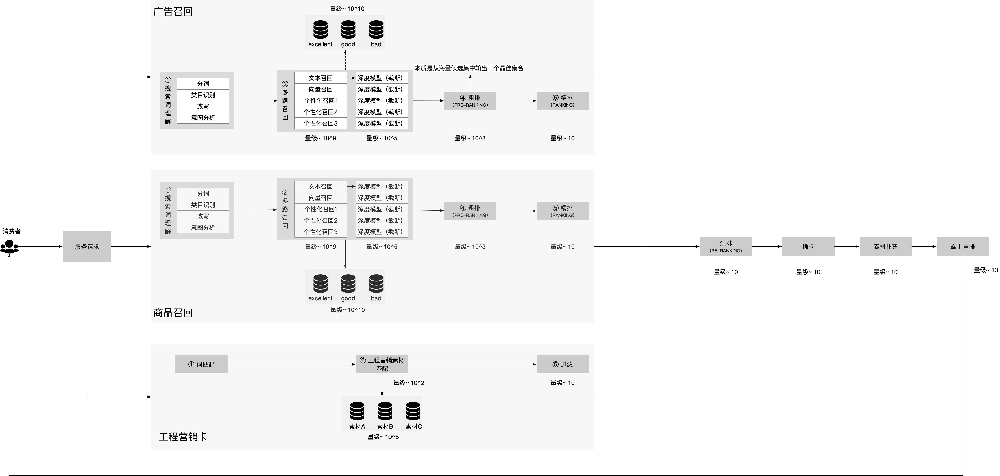
那怎么能进精品池呢，那就要让算法在计算的时候认为你是非常优质的商品，我们知道，人是活的但算法它只是个推断器，通过各种指标组合成策略尝试对某个品进行打分，那么就要求商品的多维指标都很优秀，那这个优秀怎么体现，能做的无外乎价格优势、服务能力、买家评价、销量等等基础硬性指标，针对这些做优化，你会发现要么想办法搞单子（比如刷单）要么打折，如果打折还得打骨折，不然别人的多维指标就比你好，我们且不说打折本身就是优惠，打不了骨折怎么办？这里我们先抛一下电商营销的常见手段：
在电商做营销核心分为3大类：1）折扣/优惠；2）广告/推荐；3）活动。
首先就是前面提到的打折，只是商家可控的核心手段之一，只要折扣够大就不怕没曝光，毕竟赚钱不是人人都会赔钱还是很好学的。这里一般就使用平台提供的各种商家工具。商家工具一般分为两大类：非金本位、金本位。非金本位简单点说是不用掏现金的打折，就相当于我便宜点，常见的有直接降售卖价、一件立减x元、满x减x、满x打x折，或者发优惠券。另一个就是需要商家掏真金白银来补贴消费者，常见的就是红包。
第二种就是搜索广告，如果你说我价格已经比较便宜了，再打折再发大量红包赔不起，我就是想要点流量，有流量我就肯定能卖，这怎么办呢。这时平台就说话了，我们做平台的怎么能让商家为难呢。这样，你就不要走商品链路透出商品了，我给你单独加一路，单独叫广告链路，而这条链路的规则很简单，价高者得，你稍微花点小钱就能获得曝光。这条链路就是广告，你不打广告他不打广告，平台怎么赚钱，广告其实就跟商场顶上给某些品类挂的那个小广告一样一样的，在供给极其丰富的情况下，广告是让商品冷起最快的方式，同时广告也是各个电商平台最核心的赚钱方式，没有之一，前面讲过电商平台本质上是个广告平台。
推荐是类似的，推荐与搜索不一样的点在于搜索商家是深度参与其中的，包括素材优化、广告词竞价等等，商家大体是能够算出来roi的，而推荐怎么透出这块非常不可控，同时转化率也相较于广告链路低很多，当然在现在的直播电商链路中，推荐链路反而变成了主链路了，这个对商家来讲是一件比较痛苦的事情，在货架电商中流量是相对可预测的，你只要不违规那流量是会一直有的，商家通过采取付费带动自然流量的策略慢慢的赚钱，但推荐链路非常不可控全靠平台的推荐算法策略，相同的打法有可能一天爆单有一天一点流量都没有，那没流量的那一天我备的货怎么办，仓储也要钱，资金成本也要钱，这也是商家常常诟病以及头痛的流量不稳定。
至于图上提到的工程营销卡，工程营销卡一般是属于运营的平台干预手段，一般用于一些问卷或者特定精品商家的额外流量扶持，比如今天苹果上新了，那我苹果相关的商品必须要首页出现怎么办，总不能每次都改算法召回链路。这就是第三条链路工程卡存在的价值，它是通过工程手段来确保平台运营意志得到贯彻。
第三种就是活动，最常见的就是我们说的大促，当然这个活动会有很多种的变种，比如特殊的频道页、大促、官方招商活动、新品活动等等。活动的一大特点是一定是由平台发起的，像大促一般归属于市场部，频道页一般属于特定子团队（比如聚划算、淘工厂等）。这种一般来说活动是有完整的招商流程的，商家想要参与有的是要进行让利（大促降价），有的是要掏钱（聚划算坑位费），这种商家只能被动的看平台活动情况。同时在活动中，平台需要有一些工具来干预活动的进行，因此就有了所谓的平台营销工具给运营用，比如大促的满300-50之类的就是平台营销工具。平台营销工具与商家营销工具的区别就在于操作人是平台还是商家。
当然现在随着直播生态的兴起，很多商家化身货主，只供货不售卖，在这种情况所谓的营销其实就是完全交于达人，配合达人完成相关的营销手段，但这种本身商家就脱离售卖本身了，我们在此不多说。
前面也讲了营销本质上是商家想要去获取原本不属于它自己的流量，变大的曝光流量就会像一个放大镜一样放大产品的优缺点，如果产品力好，那它就会变成一个聚宝盆帮你迅速聚集大量利润，如果产品力不好，那也会让你赔个精光。因此产品力才是本质，如果产品力一般营销其实效果并不会很好。现在市场上有不少商家一心钻研营销手段不注重打磨产品力，这个反而是劣币驱逐良币的体现。
十一、电商生态 -- 不起眼但能闷声赚大钱
电商作为一个十万亿级的市场，每个消费者/商家/平台的经营痛点都会被放大成一个亿级的市场，围绕消费者/商家/平台服务的这批就是我们说的电商生态。
我们首先说一下最庞大的商家生态，商家作为盈亏的第一责任人要为结果买单，我们前面也提到过，优化效率在经营过程中是一个非常重要的事情，辅助好商家经营也是平台的事情，因此平台会提供很多的工具给商家用于提效。但对于商家而言，单平台是有局限性的，平台只能做平台内的事情，而零售全链路涉及的范围很广它并不绑定平台，比如说玉米在西湖区卖的不好不代表在余杭区卖的也不好。同时有些商家想要干一点不那么合法的事情，比如没事刷两单，这个平台也不好下手。再其次部分领域能力是平台不一定涉及的到的，就比如说仓储能力目前电商平台也就京东与菜鸟提供了，其他的比如说多多抖快其实都没有这种能力。
因此就存在了许多的企业，他们并不直接下场电商的经营，而是通过辅助商家经营的方式来赚钱。下图简单列了一些围绕商家所做的生态，这只是冰山一角，并不全面。
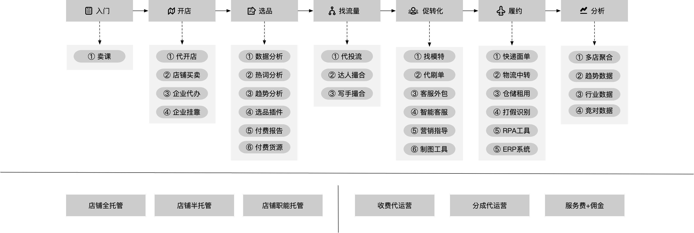
这其中列到的每一块在市场上都有着大量的公司在竞争试图帮助商家提升经营效率，就以数据为例，市场上常见的有米有数、蝉妈妈、魔镜洞察、小旺神、将军令、店雷达、电霸、癞蛤蟆、考古加、灰豚数据等等，erp系统就有聚水潭、旺店通、万里牛、网店管家等等，这背后的每一个名字对应都会是一个公司，养活着少则几人多则数十上百人的团队。因此这个提效自然是收费的，商家需要付出对应的费用来降低自己的时间成本。
消费者侧的生态普遍较少，因为服务好消费者普遍是平台的事情，所以各个平台一般都有什么用户增长、会员运营、客户满意、用户体验、市场部等等一系列面向C的部门在充分挖掘消费者需求并将其转化为平台能力，就是为了让消费者用的爽，如果你服务不好那消费者自然会用脚投票。消费者生态合法的一般做的是多平台聚合，比如说什么值得买、慢慢买这类做多平台比价聚合等的，这类生态是良性循环，对于消费者而言赚到了优惠，对于商家而言获得了额外的免费流量，有点类似于团购，当然对于设错优惠的商家而言，这个是一个灾难。消费者侧其余的所谓生态大都都被平台视为黑灰产，比如刷单的、集体薅羊毛的、分享裂变类的快速付费助力的等等，这种平台会使用对应的风控机制进行一定的处理，比如之前有段时间很火的主播在拼多多6万人拼手机的事情，这个其实在平台侧风控策略来看是明显的不良用户，每秒好几十个助力，这个怎么都不像是人干的事。
同样还有一类是平台类的生态，比如营销活动类的外包、平台加大新商/达人引入的需要的服务商、平台找流量的协作中间人等等，这类说实话与普通人没什么关系，都是企业间的合作。
在生态内，平台以及商家又化身成了消费者，进行利润层层分包，构成了庞大的泛电商，再向下于实体民生结合，最终都由商家以及消费者买单。整体而言，体量决定了电商生态是极其丰富的，只要你有钱，就可以享受到无微不至的服务，至于享受完了赚钱不赚钱要花多少钱，这块就不在生态的考量范围之内了。
对于各大电商平台而言，对于生态普遍是出于一个支持的态度，毕竟没有人能够赚完市场上的每一个钢镚，平台也很难满足每一个商家的需求，因此各个电商平台都会有所谓的开放接口对外给与外部的三方isv进行需求的个性化定制，一般是叫做xxx开放平台，比如淘宝开放平台、拼多多开放平台。
十二、直播电商 -- 特定需求场景下的高效匹配方式
在货架场做了7年，然后来直播场也呆了一年多的时间，其实整体感受下来，虽然这两年直播场域如火如荼的似乎要碾压一切变革电商市场，但个人感受下来，直播场域的电商就如同电商在历往20多年中出现的一项项变革技术手段一样，提供了另外一种在特定需求场景下更高效的人货匹配方式，但这个方式是依托于人的，这就带来了各种各样的不稳定。
在前面的论述中，我们一直强调电商的本质是零售贸易，核心做的依然是零售的事情，也就是人货匹配。这其中最高效的方式自然是厂家货物直达消费者手中。但经过前面的分析，我们其实也能够看到这个是很难的，甚至是不可能的。之间的中间商一般来讲是必须存在的，一定需要有人把批量制造的需求转化为零散的需求进行匹配，也就是我们的电商商家。
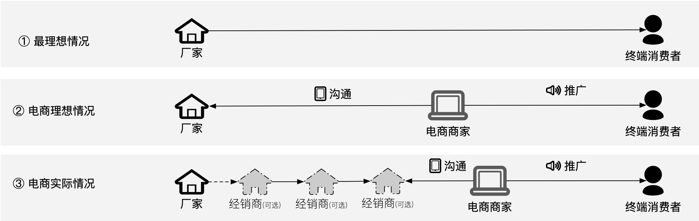
那么在电商贸易中我们能够优化的点是什么呢，其实就是不停的缩减其中的经销商的数量，降低转手率，以期望尽可能的逼近状态2。这里就有多种模式，这也是各大电商平台当前在努力的点，毕竟价格对于消费者而言是非常重要的决策因素。
京东模式：直营模式是直接按照状态2打造的，复刻的是线下的卖场模式，但这个模式下，多快好省的多其实就没了，毕竟一个中心化的系统想要满足全国人民的需求是不现实的，就像你不可能在沃尔玛买到所有想要的商品；同时这个平台它也是个企业，我们前面也提到过，赚取超额利润是每一个企业追求的事情，像胖东来那样自觉的超市全国都没几家，更何况受股东监督的上市企业；最后一个，这种模式下如若产生了垄断，平台与厂家很容易形成勾结来一起坑害消费者。
拼多多模式：多多模式其实是比较看好的，为什么这么说，因为它通过一种极致的流量调控手段，采取赢者通吃的赛马手段，把没有货源价格优势的商家的挤出赛道，经过多轮淘汰后，能够赢下来的自然就是无限逼近货源的商家，甚至是厂家直接入场，也就是m2c。但这种模式带来的就是广受诟病的质量问题，因为你不知道经销商什么时候完全被挤下赛道，或者说经销商压根不下赛道而是依据平台的这一策略直接找厂家定制一批质量更次的商品，这也是多多仅退款与罚款能做成一门生意的核心原因，因为在他的机制设计里，这是净化环境走向良性循环的一种方式，只是太简单粗暴了点。当然多多渠道也不适合大品牌的商家，前面也提到了品牌追求的是丰厚的超额利润，这一点调性并不匹配，因此多多上存在的大概率不会是品牌的新品，而是清库存式的旧款，同样品类也不全，所谓早买早享受，晚买享折扣。
抖/快模式：也就是直播电商当前在做的事情，这个模式有两个版本，一个是它播（别人带货），一个是自播（货源自己开播），我们主要说它播，自播这个模式其实意义不大，因为自播对于绝大部分的商家而言大概率是为了匹配平台开播规则送的流量，不会去真正降价，反而一定程度上提升了商家履约成本（请主播也是要钱的，如果自己播那又哪儿来时间去做选品、找流量、促转化等等繁琐的运营手段呢）。它播引入了一个三方仲裁官的概念，也就达人，这个我们下面详细点来讲，这里仅抛一个概念。
淘工厂模式：最后要讲一下的是淘工厂模式，这个模式称之为所谓的m2c，这个前面其实也重点讲过，这里就不再赘述，其核心方式是不尝试改变制造业与零售业的隔阂，而是通过平台强大的运营能力来进行消费者与厂家的连接以及心智建立，同时进行品牌孵化，如果孵化好了那厂家就会走上述的模式，如果孵化不好那损失也不大，个人也是比较看好这一模式的，只是目前这一模式还有较多的问题需要解决。
这里我们重点讲一下抖快模式，也是这两年非常火的直播电商。理想情况下达人为消费者负责去甄选真正物美价廉的商品，消费者通过信任覆盖将信任转嫁给商品产生成交，然后消费者口口相传扩大达人影响力从而带出更多的货赚更多的钱。这个似乎是良性循环，但实际上由于达人的生态目前仍处于混乱期非常的不成熟，加上准入门槛基本没有，达人水平与素质层次不齐，再加上达人的核心利益是带货佣金，因此可能会带来“我能火几个月都不知道，那为什么不趁能赚钱的时候赚钱”这一思路去割韭菜，导致99%的所谓达人是走的通用的大路货的供应链，而这批货在价格上其实并不会有太大优势，最后只会是消费者买到质价匹配度一般的货物，对于平台长期发展的声誉而言，并不是很好的事情。
但也不是说没有做的好的，目前各大平台的头部主播们，其实都在陆续构建自己的供应链体系，这带来的其实就是比较良性的竞争。在直播带货初期，由于裹挟海量的增量流量再加上小而美的团队，履约效率极高，因此带来的质价比是非常好的，就像电商刚开始那几年给消费者的观感一样，价格是真的便宜。但随着这些主播们的体量逐渐变大，其履约成本势必会变大（毕竟一大家子要养），那么他们的利润将会进一步摊薄，这也是之前辛选尝试引入过大厂高P又被迅速搞走的原因，我们还是要理解贸易的低买高卖这一本质。各直播团队这类轻资产模式的核心生存方式其实就是履约效率的极致控制，利润产生规模（C端流量进行上游议价 -> 低利润运转给消费者带来足够的质价比 -> 消费者忠诚 -> 带来更大的流量 -> 上游议价权更高 -> 超额的利润），而大厂的思路打法一直是规模带来利润，毕竟平台能够挟持庞大C端流量找提款机（投资者、股市），这是平台性质决定的（前面也提到了电商平台的收入与GMV很大程度是挂钩的）
因此随着直播团队的扩大，当其团队规模扩大导致其无法再给消费者提供足够质价比的商品时，它就会存在极大的危机，所谓的粉丝粉的本质是自己的需求，而需求最大的公约数就是性价比，当性价比不够的时候自然会换一家，当规模下来之后上游议价权就会丧失利润被蚕食最后直至倒闭，因此直播电商的头部主播们都会非常在意所谓的价格，经常在直播间因为所谓最低价的问题相互攻讦。再回到供给效率上，打造供应链是每个直播团队都绕不过去的事情，这个是他们保证自己低价以及用户体验的核心手段，所以大家都可以看到主播们都宣称自己有供应链。
所以直播电商最终做的是什么，其实还是尽可能的逼近模式二，只是中间的商家变成了达人，既然是这是不是就是我们商业的终极模式了呢，既然这么问，那自然不会是。因为虽然可能干掉了其中的多级经销商，让货物流通效率得到了比较大的提高。但这其中依然有3个问题：1）供给丰富度问题；2）直播抽佣问题；3）退货率问题。
首先我们先说第一个问题，其实这个是一个显而易见的问题，靠某几百个或者几千个几万个团队想要把控全国的消费品流转，这个是不可能的事情，厂商或者品牌给你供货也只是周期性的供，本质上是把你当做一个销售渠道，也就是换层皮的经销商。那么在消费侧来看，自然就是长期缺货的状态，这个是一个非常致命的问题，贸易的本质是做需求供给匹配，需求的快速满足一直是贸易追求目标（48小时发货/次日达/当日达/多地仓），你这连基本的功能都做不到，现在连即时零售这种对于时效性要求到极致的重资产赛道都充满了竞争，更何况庞大的电商消费市场。
我们再说第二个问题，抽佣问题。前面其实提到了进入模式二，主播类比为商家进行了人货撮合，那么产生的利润自然也就应该是由主播收割，因此各主播的佣金逻辑上就应当是之前的商家利润，那这个比例应当是多少呢，这里又陷入了一个恶性逻辑中。我们知道利润大体是营收 - 制造成本 - 经营成本。但按照利润抽佣是很难算的，因此基本的结算逻辑都走营收，这又陷入了之前电商平台抽佣的那个怪圈里了，这是一个非常高昂的税，再加上要给予主播相对最低价，因此对于广大货主而言，这里的利润会变得更薄，当尚能产生正向收益时商家会坚持，但一旦商家无法稳定盈利，这个显而易见是会最先被商家抛弃的，长久稳定的盈利才更符合商业本质。当然有的人又会说，直播电商那么多商家，也不见得都是找大主播，也有店播的，其实店播在个人理解来看，带动商家成本的进一步上升是必然的，但是带来的收益能否完全覆盖成本，这个就仁者见仁智者见智了，至少对于广大中小商家而言，可能并不一定是件好事。
第三个就是一直都提到的所谓退货率的问题。不论任何人退货商家都是有成本的，不真正履约商家是见不到钱的，但是在前置过程中的人力、物流、仓储、系统软件使用、广告、甚至于佣金之类的都是实打实已经产生的支出，这些都会被算入销售价格，所以退货率越高的类目其商品毛利就越高（比如服饰），不然商家就是赔钱的。同样退货还会带来逆向成本，比如重新入库、整理、打包、上架，对于破损的需要与消费者扯皮、报废，还要给这批货重新找销量等等，所以我们之前在京东上买小件偶尔申请退货客服就会让你退款不退货，其实核心原因就是京东的仓储是非常贵的，在财报上京东之前总提自己的仓周转率压缩到了xx天，其实就是要提升仓储利用效率，一个东西出仓了那它的位置会很快被其他的货物填满，而你退了货这个货放哪里呢，因此可能会导致逆向成本大于货品价值，所以不如送给消费者还能赚一波口碑。同样有段时间抖音的一个业务指标是订单的完美履约率，这个是一个综合指标也包含退货优化，因为只有真正意义上的履约商家才能赚到钱，才能降低商家经营成本，才能提升商家的经营意愿，毕竟商家不是雷锋，赚钱才是他们想做的。所以冲动下单带来的退货率高企一直以来是直播电商的痛。
其实直播电商还有其他的问题，比如流量不稳定、请人成本高等等，这里就不展开讲了。
从撮合的角度来看，直播电商是借助当前互联网的高渗透率做的又一次成功的变现，在特定的业务场景下确实是能够有效的提升贸易的效率（比如季节属性强、信息不对称多（需要主播详细解说）、容易形成库存，或者产品生命周期的尾货、库存货）。但论它是否是贸易形态的终态，这个明显是否定的，贸易的演进要依赖全量需求/供给匹配的效率优化，特定场景优化的天花板总是矮的。在这个路径下，货架电商其实是直播电商平台做大过程中逃不过的宿命，赚流量的快钱是一时的，供需匹配的潜力深挖才是根本的。
个人感觉当前淘天的最大竞争对手不是所谓的直播电商，由于抖快在用户日常使用主动线上，因此对于用户的需求以及喜好是更为清晰以及理解的，特定场景的匹配是更有效率的，淘天在这个垂直赛道的蛋糕本来就比较难抢。其当前最大的压力反而来自于更懂用户偏好的抖快裹挟着极大的消费势能来构建的货架电商，但从历往电商赛道竞争情况来看，toc基因深刻骨髓的公司比较难理解以及做成深b特征的生意（腾讯、b站、小红书），这个较量真章未出来之前，淘天头顶的达克摩斯之剑就会一直悬浮在头顶。
十三、收个尾
其实电商体系还有非常多的东西能够去讲，但写这个实在是很花时间了，先收个尾，后面有时间再更新。
十四、附录
我国制造业企业总量突破600万家（24年9月政府发布，附注1），东部387.2w（64.21%）其中广东、浙江、江苏、山东、河北等五省的制造业企业合计占全国的56.22%，中部113.39（18.8%），西部75.59w（12.54%），东北26.83w（4.45%）https://www.gov.cn/lianbo/bumen/202409/content_6976001.htm
规模以上消费品工业企业18万家，占规上企业的38% https://jingji.cctv.cn/2023/05/06/ARTICIXRNjQBewv9rYB68Qda230506.shtml
企业数、从业人数占全部工业近四成 https://tech.cnr.cn/techyw/technews/20220708/t20220708_525904089.shtml
直接从业人员达755万人 https://swt.fj.gov.cn/xxgk/jgzn/jgcs/dzswhxxhc/gzdt_598/202406/t20240627_6475415.htm
淘宝24年1-9月新增店铺600w https://baijiahao.baidu.com/s?id=1812675340436846460&wfr=spider&for=pc
1-9月份月份，规上工业企业每百元营业收入中的成本为85.38元，营业收入利润率为5.27% https://www.stats.gov.cn/sj/zxfb/202410/t20241027_1957183.html
制造业就业人数1.04亿 https://www.163.com/dy/article/JF9613UV0534A4SC.html